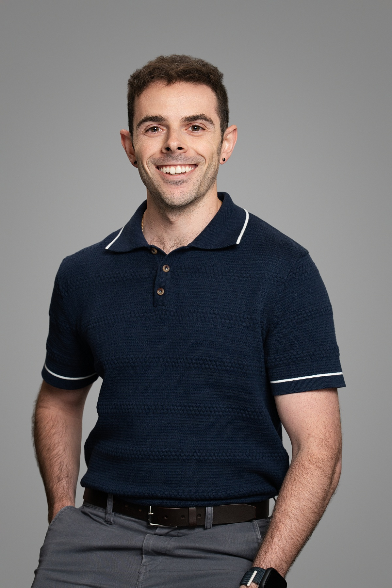
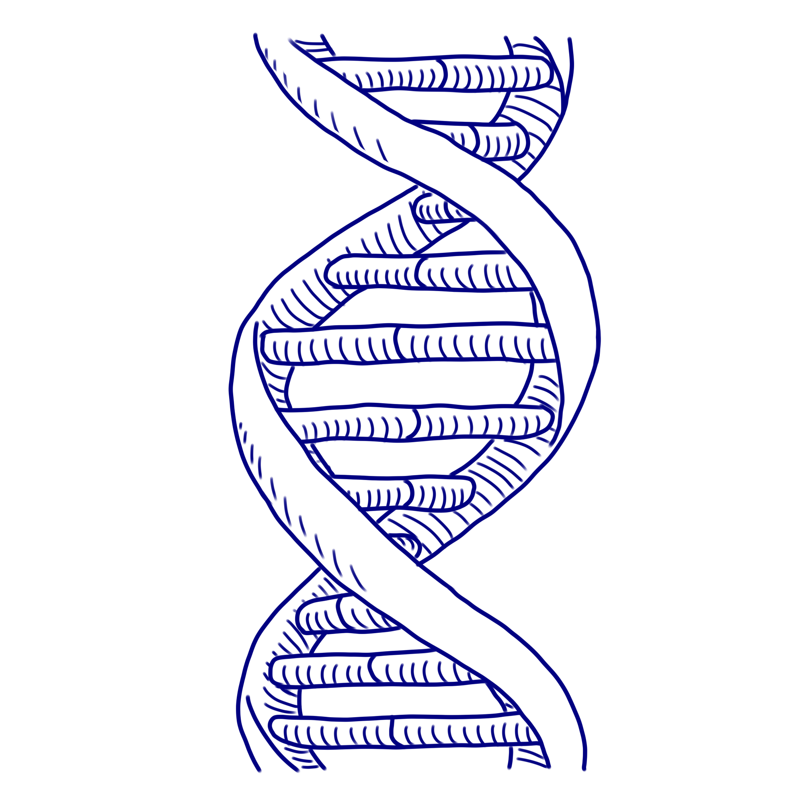

Mike Martinez M.S.
Bioinformatics research scientist making sense of complex omics data and building reproducible pipelines.
Currently at the Geisel School of Medicine at Dartmouth, Center for Quantitative Biology (Genomic Data Science Core). Working across pipeline development, single cell 'omics, metagenomics, and spatial 'omics. Building tools like RGenEDA and reproducible Snakemake workflows for the research community.
Bioinformatics Happens Here.

Multi-OmicsOverview
I'm a bioinformatics scientist with a passion for making sense of complex omics data and uncovering meaningful patterns that help turn hypotheses into actionable insights. My background is rooted in next-gen sequencing technologies and data analysis, which has allowed me to work across a multitude of omics data modalities.
Key areas of expertise:
- Pipeline development: Snakemake workflows, R packages, reproducible analysis frameworks.
- Single-cell genomics: scRNA-Seq, scATAC-Seq, and multiome analysis.
- Bulk sequencing: RNA-Seq, ATAC-Seq, WES, tRNA-Seq, miRNA-Seq.
- Metagenomics: 16S amplicon sequencing, whole-metagenome shotgun sequencing.
- Spatial omics: 10X Visium spatial transcriptomics, imaging mass cytometry.
I love collaborating with bench scientists, helping them navigate their data, and teaching them that bioinformatics is not scary. When I'm not sifting through sequencing files or surfing the command line, you'll probably find me in the gym putting up weights or playing the drums to my favorite nu-metal songs.
Bioinformatics Research Scientist
Dartmouth Geisel School of Medicine · UConn M.S.
Contact
- michael.j.martinez@dartmouth.edu
- Location
- Hanover, NH
- GitHub
- mikemartinez99
Experience
Research Scientist, Genomic Data Science Core
Geisel School of Medicine · Center for Quantitative Biology · Lebanon, NH · Oct 2024 – Current
- Created an open-source R package (RGenEDA) geared toward bulk RNA-Seq exploratory data analysis, facilitating frameworks for reproducible and unified analysis within a bioinformatics core.
- Developed reproducible Snakemake workflows for WXS, bulk ATAC-Seq, and miRNA-Seq reducing data-preprocessing time and allowing for increased scalability.
- Converted the core's repertoire of Conda environments to Pixi Workspaces, developing robust SOPs for their use for both core staff and the larger Dartmouth community.
- Support Dartmouth researchers through development of boutique-analysis pipelines for tRNA-Seq and other proprietary sequencing strategies for nuclear receptors.
- Analyze a wide range of projects for core clientele spanning eukaryotic and prokaryotic genomics including scRNA, scATAC, 10x Visium/Xenium, MGX, WXS, and bulk sequencing.
Clinical Research Technician I, Rosenberg Lab
UConn Health Center · Department of Molecular Oncology · Farmington, CT · Jun 2023 – Sept 2024
- Spearheaded the design and application of computational methods in R for multi-omics studies including bulk RNASeq, 16S, and targeted metabolomics across multiple projects.
- Utilized bash scripting to automate the processing of raw fastq files for bulk RNASeq on an HPC.
- Completed a full DEG/GSEA analysis of Pirc rats in R through multiple Bioconductor packages to highlight the combinatorial effect of naproxen and EPA in colorectal cancer chemoprevention.
- Examined the spatial immune architecture of clinical CRC tumor samples through multiplex imaging mass cytometry.
- Generated effective and publication quality figures through R to easily communicate findings.
Computational Intern, R&D
Intus Biosciences · Farmington, CT · Jun 2022 – Sept 2022
- Leveraged synthetic PacBio and Oxford Nanopore long reads as a standardized ground-truth input to validate proprietary microbiome clustering software to resolve sequences down to strain resolution.
- Aided in pipeline development through a series of custom R scripts to process taxonomy call files.
Analyst, Klassen Lab
UConn Molecular and Cell Biology · Storrs, CT · Sept 2021 – May 2023
- Managed LIMs database and deposition of raw sequencing reads to NCBI's SRA service.
- Assembled and annotated bacterial genomes from Illumina MiSeq reads using SPAdes and Prokka.
- Investigated fungal communities of T. septentrionalis fungus gardens using R (DADA2 and Phyloseq).
Education
- 2021–2023
- M.S., Microbial Systems Analysis · University of Connecticut
- 2017–2021
- B.S., Molecular and Cell Biology · University of Connecticut
Blog
Bioinformatics musings, tutorials, and practical tips.
Projects
Open-source tools and reproducible pipelines for the bioinformatics community.
RGenEDA
R package for reproducible exploratory data analysis for genomics data. Sits between raw preprocessing and formal modeling, providing a structured framework for data exploration and QC.
View on GitHub →miRNA & isomiR Pipeline
Snakemake workflow for the analysis of miRNAs and isomiRs from high-throughput sequencing data.
View on GitHub →Clover-Seq
Snakemake workflow for the comprehensive quantitative analysis of tRNA-seq libraries.
View on GitHub →RNA-Seq Pipeline
Snakemake workflow for efficient and comprehensive bulk RNA-seq preprocessing.
View on GitHub →Targeted WES Pipeline
Snakemake workflow for the preprocessing and analysis of targeted whole exome sequencing (WES) data.
View on GitHub →Now
What I'm working on and what comes next.
Multi-omics analysis at Dartmouth
Supporting researchers across the Geisel School of Medicine with bioinformatics analysis spanning single-cell, spatial, and bulk sequencing modalities. Building reproducible Snakemake workflows and developing open source R packages to help streamline genomic analyses.